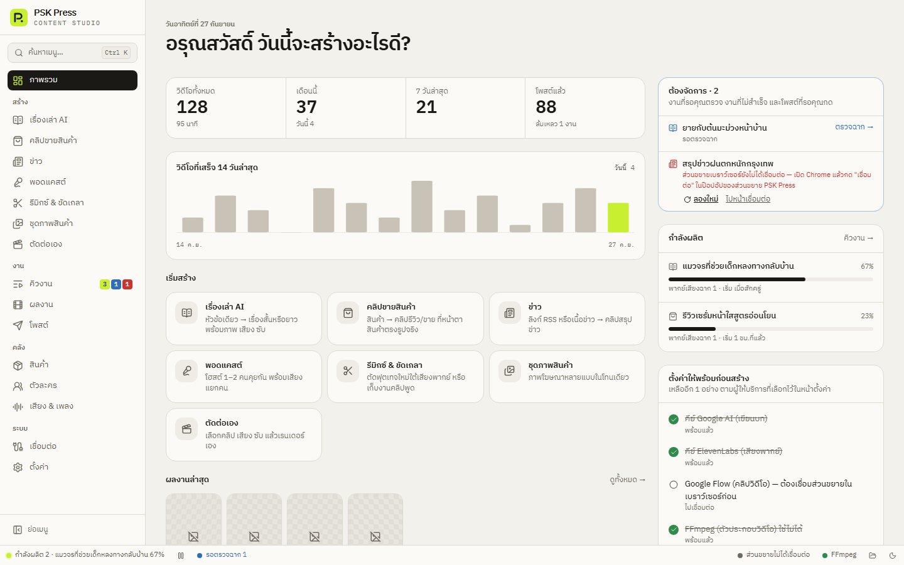

คู่มือการใช้งาน PSK Press
สตูดิโอทำคอนเทนต์บนเดสก์ท็อป — เขียนบท วาดภาพ ทำคลิป AI พากย์เสียง ใส่ซับ ตัดต่อ และโพสต์ ได้ในแอปเดียว คู่มือนี้พาใช้ทุกหน้าทีละขั้น
PSK Press ทำอะไรได้บ้าง
พิมพ์หัวข้อหรือเลือกสินค้า แล้วแอปจะทำให้ครบวงจร:
- ให้ AI วางบท วาดภาพหรือทำคลิปวิดีโอทีละฉาก
- พากย์เสียง ใส่ซับเคลื่อนไหว ฮุค พาดหัว และเพลง
- ประกอบเป็นไฟล์วิดีโอพร้อมแคปชัน
- ส่งขึ้น TikTok / YouTube / Facebook ผ่านเบราว์เซอร์ที่คุณล็อกอินไว้
ทุกอย่างทำงานบนเครื่องของคุณ ใช้คีย์ AI หรือบัญชีเว็บของคุณเอง ไม่มีเซิร์ฟเวอร์ตัวกลาง


ถ้าโมเดล AI ที่ตั้งไว้ถูกผู้ให้บริการปิด หน้านี้จะเตือนไว้ด้านบนพร้อมปุ่มเปลี่ยนให้ (แอปตรวจวันละครั้ง) ดู แก้ปัญหา
เริ่มจากตรงนี้
ถ้าเพิ่งติดตั้งครั้งแรก ทำตามลำดับนี้:
- ติดตั้งแอป — ดาวน์โหลดไฟล์
-setup.exeแล้วติดตั้ง แอปจะอัปเดตตัวเองหลังจากนั้น - เชื่อมเบราว์เซอร์ Chrome — ติดตั้งส่วนขยาย PSK Press Bridge แล้วล็อกอิน Gemini, Google Flow และบัญชีโซเชียลใน Chrome
- ตั้งค่าครั้งแรก — เลือกว่าจะให้ AI ตัวไหนเขียนบท วาดภาพ พากย์เสียง และทำคลิป (ใช้ผ่านเว็บโดยไม่ต้องมีคีย์ก็ได้)
- ทำคลิปแรก — ลองทำคลิปขายสินค้า 15 วินาทีตั้งแต่ต้นจนโพสต์
หน้าในแอป
เมนูด้านซ้ายของแอปแบ่งเป็น 4 กลุ่ม แต่ละหน้ามีคู่มือของตัวเอง:
สร้าง
คลิปขายสินค้าสินค้า → คลิปรีวิว/ขาย ที่หน้าตาสินค้าตรงรูปจริง ทำแบบแผ่นสตอรี่บอร์ดได้
เรื่องเล่า AIหัวข้อเดียว → เรื่องสั้นหรือยาว พร้อมภาพ เสียง ซับ
ข่าวลิงก์ RSS หรือเนื้อข่าว → คลิปสรุปข่าว
พอดแคสต์โฮสต์ 1–2 คนคุยกัน พร้อมเสียงแยกคน
รีมิกซ์ & ขัดเกลาตัดฟุตเทจใหม่ใต้เสียงพากย์ หรือเก็บงานคลิปพูด
ชุดภาพสินค้าภาพโฆษณาหลายแบบในโทนเดียว
ตัดต่อเองเลือกคลิป เสียง ซับ แล้วเรนเดอร์เอง
งาน
คิวงานงานที่กำลังผลิตและรอคิว ดูบันทึกทุกขั้นตอน
ตรวจฉาก (storyboard)แก้บทและภาพทุกฉากก่อนใช้เครดิตทำคลิปจริง
ผลงานวิดีโอและภาพที่สร้างเสร็จ
โพสต์โพสต์และตั้งเวลาลง TikTok / YouTube / Facebook
คลัง
สินค้าฐานข้อมูลสินค้า ลิงก์ และรูป
ตัวละครคนหรือมาสคอตที่หน้าตาเหมือนเดิมทุกคลิป
เสียง & เพลงเสียงพากย์ เพลงประกอบ และเอฟเฟกต์
ชุดแบรนด์โลโก้ ลายน้ำ สีซับ และอินโทร/เอาท์โทรของแต่ละเพจ
คลังพรีเซ็ตชุมชนนำเข้าพรีเซ็ตที่คนอื่นแบ่งปัน และแชร์การตั้งค่าของคุณ
ระบบ
เชื่อมต่อส่วนขยายเบราว์เซอร์ บัญชีโซเชียล และการแจ้งเตือน
ตั้งค่าคีย์ AI โมเดล การเรนเดอร์ และโฟลเดอร์
พรอมต์ระบบแก้คำสั่งทุกข้อที่แอปส่งให้ AI
แก้ปัญหาข้อความผิดพลาดที่เจอบ่อยและวิธีแก้
แจ้งปัญหาคัดลอกข้อมูลส่งให้ผู้พัฒนาในคลิกเดียว
ภาพรวมการทำงาน
ทุกงานวิดีโอผ่านขั้นตอนเดียวกัน ทุกขั้นดูได้สดในบันทึกของงาน (คิวงาน → ดูบันทึก):
| ขั้น | เกิดอะไรขึ้น | ใช้อะไร |
|---|---|---|
| 1. วางบท | AI เขียนบทพากย์ คำบรรยายภาพ และการเคลื่อนกล้องทีละฉาก พร้อมชื่อเรื่อง ฮุค และแคปชัน | Gemini / ChatGPT (ผ่านเว็บหรือ API) |
| 2. ตรวจฉาก | ถ้าเปิด “ตรวจฉาก” งานจะหยุดให้คุณแก้บทและภาพก่อน | คุณ |
| 3. ภาพ / คลิป | วาดภาพนิ่งทีละฉาก หรือทำคลิปวิดีโอ AI (Google Flow / Veo) | Gemini / ChatGPT / Flow |
| 4. เสียง | พากย์เสียง AI หรือให้คนในคลิปพูดเอง | ElevenLabs / Gemini / OpenAI |
| 5. เรนเดอร์ | ต่อฉาก ใส่ซับ ฮุค พาดหัว เพลง ลายน้ำ แล้วเข้ารหัสเป็น MP4 | FFmpeg (มากับแอป) |
| 6. โพสต์ | ส่งขึ้นแพลตฟอร์มทันที ตั้งเวลา หรือเตรียมไว้ให้คุณกดเอง | ส่วนขยายใน Chrome |
คู่มือนี้อ้างชื่อปุ่มตามแอปจริง
ข้อความในกรอบแบบนี้ เช่น สร้างเลย คือปุ่มหรือช่องที่มีชื่อตรงตามในแอป ภาพหน้าจอในคู่มือใช้ข้อมูลตัวอย่าง